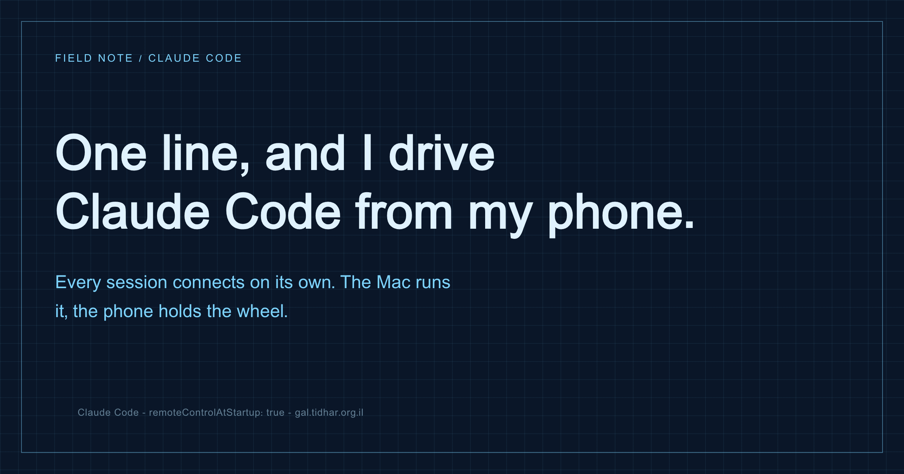

Claude Code · Remote Control · DX
One line and I drive Claude Code from my phone
For weeks I ran the same little ritual: open a terminal, start Claude Code, then type /remote-control so I could keep an eye on the session from my phone. Great feature, dumb ritual - because the one time you forget is the time you leave the house and the session sits there, stuck on a permission prompt, with nobody near the keyboard to press allow. Turns out there is one line that makes it the default.

What Remote Control actually is
Remote Control links a terminal Claude Code session to claude.ai and the mobile app. Once a session is registered, you can watch every tool call live on your phone, answer Claude's questions, approve or deny permission prompts, and stop it - from the elevator, the car, the beach. The Mac stays the runner; the phone becomes the remote.
By default it is off. You turn it on per session with the /remote-control command (or by launching with claude --remote-control). Which is fine, until it is the fifth time today and you forgot on the sixth.
The one line
There is a setting that arms the bridge automatically for every interactive session. In ~/.claude/settings.json:
{
"remoteControlAtStartup": true
}That is it. Every new session now boots already connected - nothing to type, nothing to remember. If you prefer clicking to editing JSON, the same switch lives in /config as "Enable Remote Control for all sessions", and in the desktop app under Settings → Claude Code → Enable remote control by default.
Why it changed more than my convenience
I expected "one less command to type". What I did not expect was that it changed when I start work. Now I kick off a heavy refactor or a long code review on purpose right before I leave, knowing I can babysit it from my pocket - approve the file writes, answer the one ambiguous question, kill it if it wanders. The machine is the runner, the phone is the remote, and I stopped being chained to the chair just to see whether something got stuck.
The failure mode it kills is specific and annoying: an agent that is done thinking and just waiting on a yes/no, while you are three kilometres away. With the bridge always on, that prompt follows you instead of freezing the run.
A couple of honest caveats
- It is your account's session, on the network. Remote Control mirrors the session to claude.ai. That is the whole point, but it means a shared or sensitive machine is a deliberate choice, not a default you forgot you flipped. Admins can hard-disable the whole feature with
disableRemoteControl. - Approving from a phone is easy - too easy. The same one-tap allow that unblocks you from the road will also wave through a command you would have paused on at the desk. The remote does not make you read more carefully; keep the risky stuff for when you are actually looking.
- It is per interactive session, not background jobs. This arms normal sessions you start yourself. It is not a scheduler - if you want unattended runs, that is a different mechanism.
Try it
Add the key to ~/.claude/settings.json and start a fresh session - it comes up connected. Then open the app and watch it work:
# ~/.claude/settings.json
{
"remoteControlAtStartup": true
}